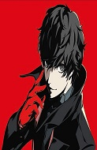
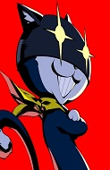

Selecione seu phantom thieve
- 
- 
Joker
Ren Amamiya, um garoto que foi culpado por um crime que não cometeu e após isso obrigado a se mudar e estudar na Shujin Academy, onde acidentalmente conhece o metaverse, ele então acaba se tornando líder dos Phantom Thieves que buscam remover intenções malévolas do coração das pessoas através do Metaverso.